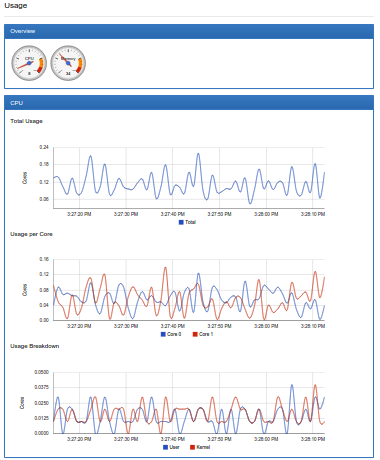

Tools for Monitoring Resources
To scale an application and provide a reliable service, you need to understand how the application behaves when it is deployed. You can examine application performance in a Kubernetes cluster by examining the containers, pods, services, and the characteristics of the overall cluster. Kubernetes provides detailed information about an application’s resource usage at each of these levels. This information allows you to evaluate your application’s performance and where bottlenecks can be removed to improve overall performance.
In Kubernetes, application monitoring does not depend on a single monitoring solution. On new clusters, you can use two separate pipelines to collect monitoring statistics by default:
The resource metrics pipeline provides a limited set of metrics related to cluster components such as the HorizontalPodAutoscaler controller, as well as the
kubectl toputility. These metrics are collected by metrics-server and are exposed via themetrics.k8s.ioAPI.metrics-serverdiscovers all nodes on the cluster and queries each node’s Kubelet for CPU and memory usage. The Kubelet fetches the data from cAdvisor.metrics-serveris a lightweight short-term in-memory store.A full metrics pipeline, such as Prometheus, gives you access to richer metrics. In addition, Kubernetes can respond to these metrics by automatically scaling or adapting the cluster based on its current state, using mechanisms such as the Horizontal Pod Autoscaler. The monitoring pipeline fetches metrics from the Kubelet, and then exposes them to Kubernetes via an adapter by implementing either the
custom.metrics.k8s.ioorexternal.metrics.k8s.ioAPI.
Resource metrics pipeline
Kubelet
The Kubelet acts as a bridge between the Kubernetes master and the nodes. It manages the pods and containers running on a machine. Kubelet translates each pod into its constituent containers and fetches individual container usage statistics from the container runtime, through the container runtime interface. For the legacy docker integration, it fetches this information from cAdvisor. It then exposes the aggregated pod resource usage statistics through the kubelet resource metrics api. This api is served at /metrics/resource/v1alpha1 on the kubelet’s authenticated and read-only ports.
cAdvisor
cAdvisor is an open source container resource usage and performance analysis agent. It is purpose-built for containers and supports Docker containers natively. In Kubernetes, cAdvisor is integrated into the Kubelet binary. cAdvisor auto-discovers all containers in the machine and collects CPU, memory, filesystem, and network usage statistics. cAdvisor also provides the overall machine usage by analyzing the ‘root’ container on the machine.
Kubelet exposes a simple cAdvisor UI for containers on a machine, via the default port 4194. The picture below is an example showing the overall machine usage. However, this feature has been marked deprecated in v1.10 and completely removed in v1.12.

Starting from v1.13, you can deploy cAdvisor as a DaemonSet for an access to the cAdvisor UI.
Full metrics pipelines
Many full metrics solutions exist for Kubernetes.
Prometheus
Prometheus can natively monitor kubernetes, nodes, and prometheus itself. The Prometheus Operator simplifies Prometheus setup on Kubernetes, and allows you to serve the custom metrics API using the Prometheus adapter. Prometheus provides a robust query language and a built-in dashboard for querying and visualizing your data. Prometheus is also a supported data source for Grafana.
Sysdig
Sysdig provides full spectrum container and platform intelligence, and is a true container native solution. Sysdig pulls together data from system calls, Kubernetes events, Prometheus metrics, statsD, JMX, and more into a single pane that gives you a comprehensive picture of your environment. Sysdig also provides an API to query for providing robust and customizable solutions. Sysdig is built on Open Source. Sysdig and Sysdig Inspect give you the ability to freely perform troubleshooting, performance analyis and forensics.
Google Cloud Monitoring
Google Cloud Monitoring is a hosted monitoring service you can use to visualize and alert on important metrics in your application. can collect metrics from Kubernetes, and you can access them using the Cloud Monitoring Console. You can create and customize dashboards to visualize the data gathered from your Kubernetes cluster.
This video shows how to configure and run a Google Cloud Monitoring backed Heapster:

Google Cloud Monitoring dashboard example
This dashboard shows cluster-wide resource usage.
CronJob monitoring
Kubernetes Job Monitor
With the Kubernetes Job Monitor dashboard a Cluster Administrator can see which jobs are running and view the status of completed jobs.
New Relic Kubernetes monitoring integration
New Relic Kubernetes integration provides increased visibility into the performance of your Kubernetes environment. New Relic’s Kubernetes integration instruments the container orchestration layer by reporting metrics from Kubernetes objects. The integration gives you insight into your Kubernetes nodes, namespaces, deployments, replica sets, pods, and containers.
Marquee capabilities: View your data in pre-built dashboards for immediate insight into your Kubernetes environment. Create your own custom queries and charts in Insights from automatically reported data. Create alert conditions on Kubernetes data. Learn more on this page.
Feedback
Was this page helpful?
Thanks for the feedback. If you have a specific, answerable question about how to use Kubernetes, ask it on Stack Overflow. Open an issue in the GitHub repo if you want to report a problem or suggest an improvement.